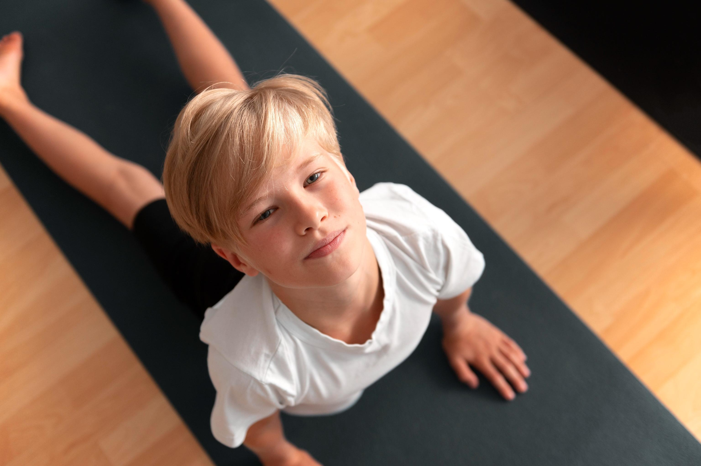
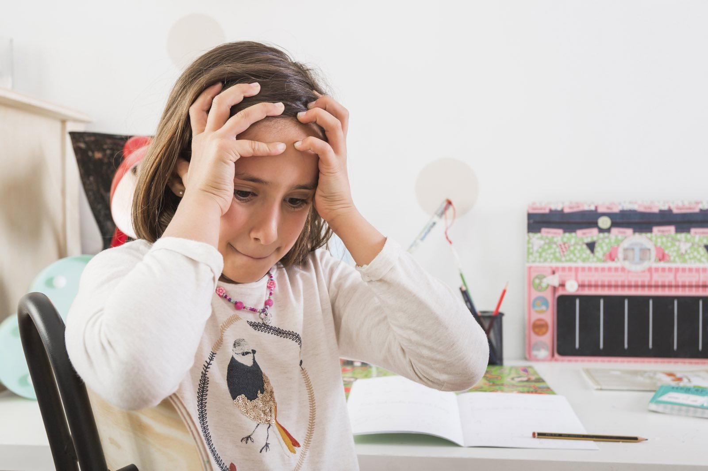
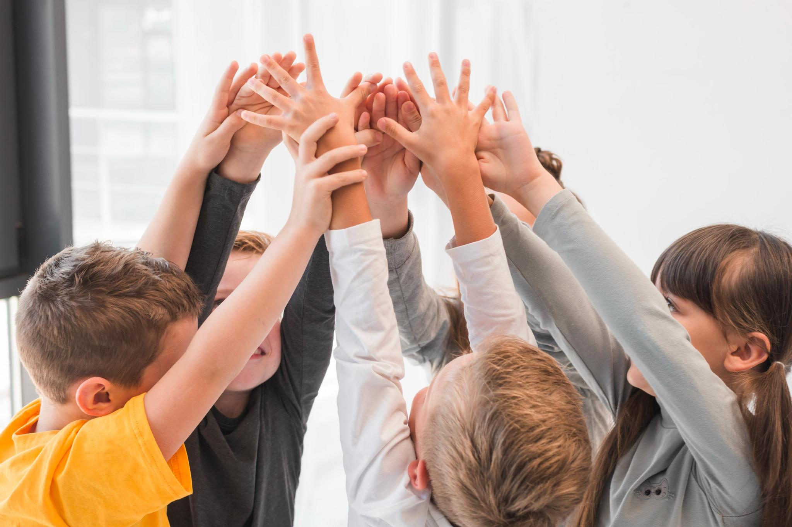
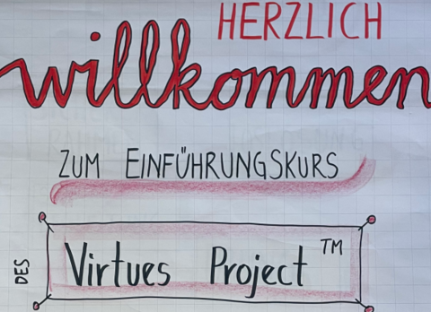
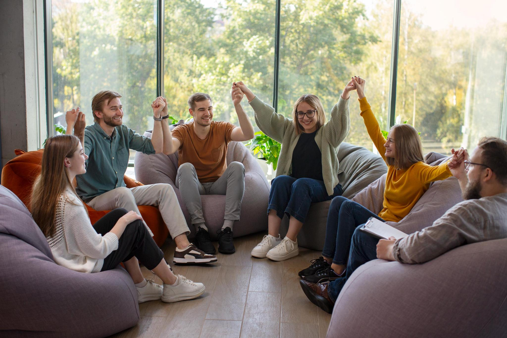
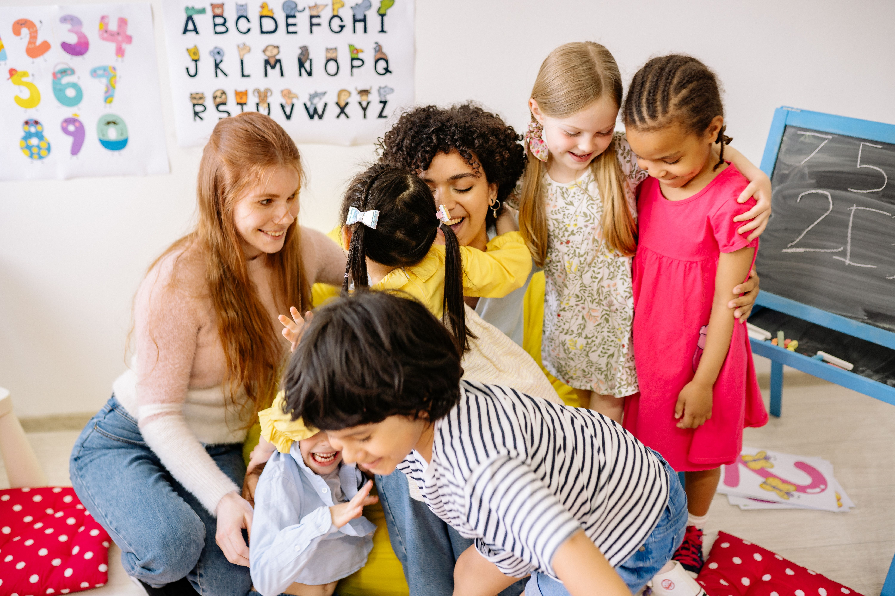

Reflexintegration
Nach Vereinbarung
Präsenz
Alle 3–4 Wochen für 1 Stunde über 6–13 Monate (je nachdem wie viele Reflexe noch restaktiv sind).

Ich freue mich, dass du hier bist! In meiner Arbeit dreht sich alles um die Entdeckung und Stärkung deiner inneren Ressourcen – für mehr Freude und Leichtigkeit im Leben.
Ich bin Judith Böhme, begeisterte Potentialbotschafterin und Impulsgeberin, Facilitator im internationalen Virtues Project™, Kinder- und Jugendcoach und Reflexintegrationstrainerin. Mein Ziel ist es, Menschen zu stärken: ihre individuellen Potenziale zu entdecken, Selbstvertrauen aufzubauen, Resilienz zu fördern und innere Ressourcen entfalten.
Meine Arbeit richtet sich an Erwachsene, Kinder und Jugendliche – an alle, die ihre Stärken entfalten, ihre Beziehungen stärken und mit mehr Leichtigkeit und Freude durchs Leben gehen möchten.
Ich freue mich darauf, dich oder deine Familie auf deiner Reise zu begleiten!
Du hast noch Fragen oder möchtest in Kontakt treten? Schreib’ mir gern, ich freue mich auf deine Nachricht.
Herzlichst,
Judith Böhme
Potenziale entfalten, Blockaden lösen
Manche Kinder und Jugendliche haben so viel Potenzial – und trotzdem blockieren sie manchmal ihre eigenen Schritte. Leistungsdruck, innere Unsicherheiten oder wiederholte Misserfolge können sich in Schulstress, Ängsten, Rückzug, Wut oder fehlendem Selbstvertrauen zeigen. Jedes dritte Kind erlebt Stress, der sich über längere Zeit zu einem Burnout entwickeln kann.
Blockaden entstehen meist unbewusst, zum Beispiel durch:
Diese Muster hindern Kinder daran, ihr Potenzial frei zu entfalten, obwohl sie alles haben, um Herausforderungen mit Freude und Leichtigkeit zu meistern.
Ich biete Kindern und Jugendlichen einen sicheren Raum, in dem sie nichts leisten müssen – aber alles entdecken dürfen. Die Kurzzeitcoachings mit neurowissenschaftlich fundierten Methoden helfen Blockaden gezielt zu lösen und wieder Zugang zu den eigenen Ressourcen zu bekommen.
Im Coaching lernen Kinder und Jugendliche:
Jede Sitzung ist praxisnah, individuell und empathisch gestaltet, sodass Kinder sichtbare Fortschritte machen und ihr Potenzial Schritt für Schritt entfalten können.
Das Coaching umfasst in der Regel 5–6 Sitzungen. Zuvor findet ein Vorgespräch mit den Eltern statt, um die Ausgangssituation zu klären und Ziele zu definieren.
Neugierig geworden? Ich freue mich darauf, dein Kind auf dieser Reise zu begleiten! Ruf mich gern an und vereinbare einen Telefontermin.
Wenn alte Muster den Alltag bremsen
Urreflexe (frühkindliche Reflexe) sind genetisch festgelegte Bewegungsmuster, die jedes Kind von Geburt an mitbringt. Sie sind wie ein innerer persönlicher Trainer:
So entsteht die sogenannte neuronale Reife – die Basis dafür, dass ein Kind Informationen verarbeiten, Bewegungen koordinieren und konzentriert lernen kann.
Wenn sich die Urreflexe wie vorgesehen im ersten Lebensjahr integrieren, arbeitet das Nervensystem reibungslos zusammen. Bleiben jedoch einzelne Reflexe aktiv, können sie wie „Störsignale“ wirken.
Die Folgen könnten sein: Entwicklungsverzögerungen, Lernschwierigkeiten, motorische Unruhe und ein geschwächtes Selbstwertgefühl, weil das Kind spürt: „Ich strenge mich an – und trotzdem klappt es nicht.“
Reflexintegrationstraining ist ein Bewegungsprogramm und vergleichbar mit einer Gymnastik ohne Geräte.
Das Wichtigste für den Erfolg: Regelmäßigkeit. Die Übungen sind kurz (ca. 10 Minuten am Tag), aber die Kontinuität macht den Unterschied. Nur so können die alten Muster dauerhaft „überschrieben“ werden.
Wir treffen uns in der Regel alle 4 Wochen. Ein kompletter Prozess dauert meist 6–12 Monate, je nachdem, wie viele Reflexe aktiv sind und wie verlässlich die Übungen zu Hause gemacht werden.
So entsteht Schritt für Schritt mehr innere Ruhe, bessere Koordination und Leichtigkeit beim Lernen – und dein Kind kann sein Potenzial freier entfalten.
✨ Möchtest du wissen, ob Reflexintegration deinem Kind helfen kann? Dann melde dich gern bei mir für ein erstes Gespräch – ich freue mich, dich und dein Kind kennenzulernen!
Das Virtues Project™ wurde 1991 von Linda Kavelin-Popov (Psychotherapeutin), ihrem Mann Dr. Dan Popov (Kinderpsychologe) und ihrem Bruder Jon Kavelin (Disney-Imagineer) ins Leben gerufen. Es ist eine weltweite Initiative, die Menschen in über 130 Ländern dabei unterstützt, ihre inneren Ressourcen – auch Tugenden genannt – zu erkennen und bewusst zu leben.
Ziel des Projekts ist es, mit einfachen und alltagstauglichen Werkzeugen die Herzensqualitäten in uns selbst und anderen zu stärken und zu entfalten.
Im Virtues Project™ werden Tugenden als innere Ressourcen verstanden, die in jedem Menschen angelegt sind – unabhängig von Herkunft, Religion oder Kultur. Sie sind universell gültige, positive Eigenschaften wie Mut, Mitgefühl oder Geduld, die das Fundament unserer Charakterstärke bilden.
Werte hingegen sind oft individuell, kulturell oder gesellschaftlich geprägt. Sie können Tugenden umfassen, aber auch auf Materielles ausgerichtet sein, wie beispielsweise Wohlstand oder Erfolg. Während jede Tugend ein Wert sein kann, ist nicht jeder Wert eine Tugend.
Dr. Dan Popov studierte zahlreiche Religionen und Weisheitstraditionen und fand heraus, dass Tugenden die Grundlage vieler Lehren und Philosophien bilden. Das Virtues Project™ nutzt diese universellen Qualitäten, um Menschen in ihrer persönlichen und gemeinschaftlichen Entwicklung zu unterstützen.
Virtues Project für Schulen: Download der Broschüre als PDF

Nach Vereinbarung
Präsenz
Alle 3–4 Wochen für 1 Stunde über 6–13 Monate (je nachdem wie viele Reflexe noch restaktiv sind).

Nach Vereinbarung
Präsenz
Meist zwischen 5–8 Sitzungen über etwa 5–8 Wochen hinweg.

Mit meinem Programm entdecken Kinder spielerisch ihre inneren Schätze. Eine wunderbare Ergänzung zur Wertearbeit in Schulen & Kitas.

Samstags
Start: Samstag, 14. November.
3 Vormittage à ca. 4 Stunden. Hybrid.
Abendkurs
Start: Donnerstag, 28. Januar.
6 Abende à ca. 2 Stunden. Hybrid.

Tauche ein in die Welt der Tugenden und erlebe in zwei Stunden, wie die fünf Strategien des Virtues Project™ das Beste in dir und anderen wecken. Der perfekte Schnupperkurs.
jeweils von 18:30 – ca. 20 Uhr
Jeden 1. Montag im Monat
(außer während der bayrischen Schulferien)
Kostenfreies Angebot

Ein Kurs für Eltern, Erziehungsberechtigte und Großeltern, der praktische Werkzeuge für einen wertschätzenden, ruhigeren Familienalltag vermittelt.

Praktische Strategien für Lehrkräfte, um eine wertschätzende und stärkende Schulkultur zu gestalten und Konflikte zu reduzieren.

Wie geht es dir wirklich als Pädagog:in? In diesem geschützten Raum tauchst du ein in Strategien gegen Mitgefühlserschöpfung, Burnout und moralische Verletzung.
Du möchtest mehr wissen? Gern nehme ich dich mit in meinen Newsletter mit auf. Bitte trage unten deine Emailadresse ein.
Außerdem erhältst du mit der Anmeldung zum Newsletter die Ressourcenliste von mir. Die Liste enthält 147 innere Ressourcen. Es sind universelle, positive Qualitäten wie Mut, Mitgefühl oder Geduld.
Den Newsletter verwalte ich manuell. Es dauert eine kurze Zeit, bis du von mir die erste Email erhältst. In dieser bitte ich dich, deine Emailadresse und Newsletter-Anmeldung zu bestätigen. Als nächsten Schritt teile ich die Ressourcenliste mit dir.
Angaben gemäß § 5 TMG:
Judith Böhme
Dompfaffweg 13
87439 Kempten
Kontakt:
E-Mail: hallo@judithboehme.de
Verantwortlich für den Inhalt nach § 55 Abs. 2 RStV:
Judith Böhme
Hinweis zur Streitschlichtung:
Wir sind zur Teilnahme an einem Streitbeilegungsverfahren
vor einer Verbraucherschlichtungsstelle weder verpflichtet
noch bereit.
Haftungshinweis:
Trotz sorgfältiger inhaltlicher Kontrolle übernehmen wir
keine Haftung für die Inhalte externer Links. Für den Inhalt
der verlinkten Seiten sind ausschließlich deren Betreiber
verantwortlich.